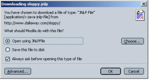
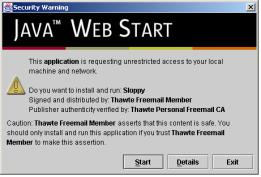

| dallaway.com - Sloppy - Download |
DownloadSloppy is a Java Web Start application. Here are the download steps:
Your browser may ask you what you want to do with this "JNLP" file. The answer is to launch it or open it with JNLPFile:  When the application runs for the first time, it asks for "unrestricted access" to your local machine. Sloppy needs this because normally Web Start applications are not allowed to access the network. Of course Sloppy needs network access in order to get at the web sites you want to see slowed down. Click "Start".  |